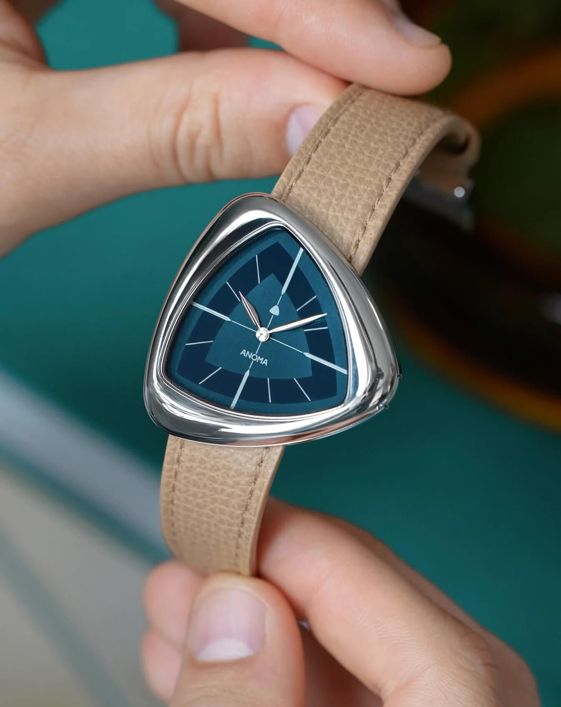
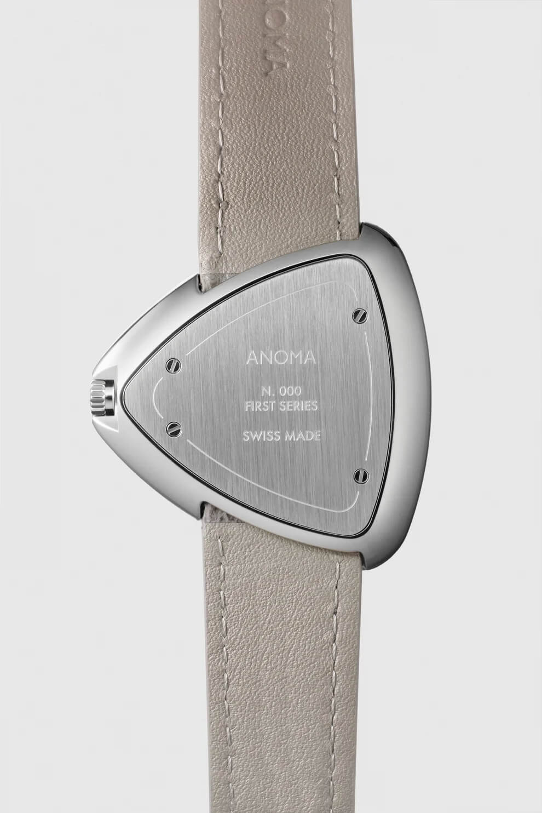

Anoma A1: The Strap Is The Frame
Anoma launched out of London in 2023, founded by Matteo Violet Vianello, who came out of the indie retailer A Collected Man. The name is short for anomaly, which is honest advertising, because the A1 is a rounded triangle. Not square, not round, not a cushion case pretending to be interesting. A triangle with soft corners and mirror-polished flanks, 39mm, no lugs!
 Nenad Pantelic • September 23, 2024
Nenad Pantelic • September 23, 2024

The shape came from a 1950s free-form table by Charlotte Perriand, the French designer who worked alongside Le Corbusier. Vianello found one in a Paris antique gallery years before the watch existed. You can also see Brâncuși in it, and a bit of Niemeyer in the way the curves refuse to sit still.
Fine. Lovely story. Here is the part that matters to us.
No lugs. None.
There are no lugs on the A1. The grained Italian leather strap feeds directly into the case through two slender openings cut into the sides.
I want to be careful not to oversell this as an invention, because integrated straps have existed forever and plenty of brands have hidden their lugs.
What Anoma got right is the execution at the exact point where most attempts go wrong: the transition. On a lot of lugless designs you still see the strap pile up at the case, a little bunching where leather meets steel, a seam that tells you the two parts were negotiated rather than designed together. The A1 does not do that. The leather enters the case and disappears.
Look at it head on and nothing interrupts the case. The eye runs around that triangle without hitting a single hard stop. That is the thing I find quietly impressive, because a strap is normally the compromise you accept to get a watch onto your wrist. Here it reads as a continuation of the body.

Why the frame comparison keeps coming back
Think about what a frame does to a painting.
You can put a good canvas in a flat-pack IKEA frame and it will hang on your wall and be fine. The art survives. Nobody is fooled.
Or you can have a frame cut by someone who looked at the painting first, picked the profile and the depth and the finish because of what the work needed, and in that case the frame stops being storage and becomes part of the piece.
The A1 strap is the second kind. It was cut for this watch, for these openings, for this particular geometry, and it holds the case the way a proper frame holds a canvas. Grey or sand on the original run, both muted enough to let the steel do the talking.
Specifications
| Brand | Anoma |
| Model | A1 |
| Case | 39mm, stainless steel, rounded triangle, mirror-polished flanks |
| Lugs | None, strap integrated into the case |
| Strap | Grained Italian leather, grey or sand on the original run |
| Movement | Sellita SW100 automatic |
| Price | £1,300 at launch |
And now the downside, because this is a strap site and I would be lying by omission.
You are not strap hunting with an A1. Forget your Horween stash, forget that perfect 20mm sailcloth you have been saving, forget going full chaos mode with a bund on a Tuesday. The geometry means replacements are a brand affair, and the freedom I normally treat as a baseline requirement simply is not on the table. For a lot of my readers that is a hard no, and it should be. Buy the watch knowing exactly what you are signing up for.
What I will say is that the trade reads as deliberate rather than lazy. Anoma did not hide a cheap attachment behind a clever case. They decided the strap was a load-bearing design element and then did that work, which is more than most brands at £1,300 bother with.
Credit where it is due
A new brand's first watch is usually where corners get cut, and the strap is the easiest corner of all. Anoma treated it as the thing the whole design rests on. That is a real decision made by people paying attention, and the result is one of the most coherent watch-and-strap pairings I have seen out of an independent in years.
I hope they keep being an anomaly.